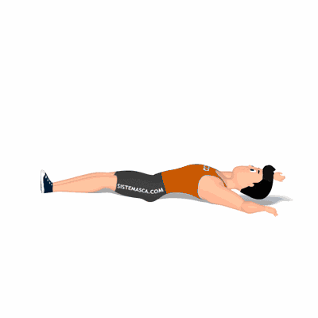

Toe Touch Unilateral no Solo

Exercício para fortalecimento e hipertrofia da região abdominal, reto abdominal, oblíquos internos e externos. Indicado a praticante de musculação nível intermediário e avançado. Estimula o equilíbrio, coordenação motora e força muscular.
Ficha Técnica
Tipo: Musculação
Grupo Muscular: Abdome
Aparelho: Nenhum
Músculos: Nenhum
Como realizar
- Deite sobre um colchonete, 2. Braços e pernas estendidos;
- Eleve a perna direita à altura da flexão do quadril, simultaneamente eleve o braço esquerdo estendendo a mão ao encontro do pé direito;
- Manter o braço direito apoiado ao solo para obter uma base estável;
- Retorne à posição inicial, repita os movimentos alternando entre os membros até finalizar as repetições.
 RC STORE
RC STORE